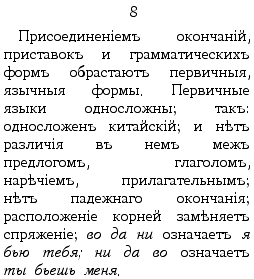
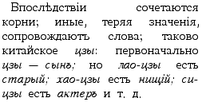
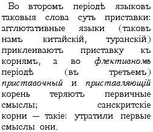
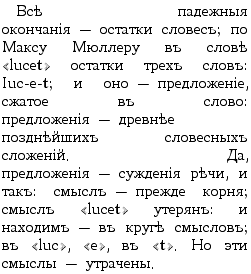
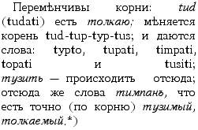
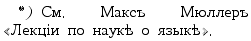

Glossolalia (Section 8)

Initial linguistic forms are overgrown with the connection of endings, prefixes and grammatical forms. The initial languages are one-stemmed; so it is: Chinese is single-one-stemmed; and there is no distinction in it among a preposition, a verb, an adverb, an adjective; there are no case endings; the placement of the roots substitutes for conjugation; ngo ta ni means I beat thee; ni ta ngo means thou beatest me.

Subsequently some roots combine; others, losing their significations, accompany words; such is the Chinese tszy; originally tszy was -- son; but lao-tszy is old; khao-tszy is poor; si-tszy is an actor, etc.

In the second period of languages such words are prefixes: agglutinative languages (such for us are Chinese and Turanian) attach a prefix to the roots, and in the inflected period (the third period)
the prefixed and prefixal root lose their original meanings; Sanskrit roots are -- like this: they have lost their original meanings.

All of the case endings are -- remnants of words; according to Max Muller in the word "lucet" are the remnants of three words: "luc-e-t"; and it is -- a sentence compressed into a word: sentences are -- more ancient than later verbal combinations. Yes, the sentences are -- the judgements of speech; and so: meaning -- precedes the root; the meaning of "lucet" has been lost; and we find it -- in a circle of meanings; in "luc," "e," in "t." But these meanings -- have been lost.

Roots can alternate: tud (tudati) is Russian tolkayu [I push]; the root alternates tud-tup-typ-tus; and gives the words: typto, tupati, timpati, topati, and tusiti; Russian tuzit' [to pummel] -- comes from here; from here are the words timpan [typanum] which is precisely (according to its root): tuzimyj [pummeled], tolkaemyj [pushed]. *

* Cf. F. Max Muller "Lectures on the Science of Language."